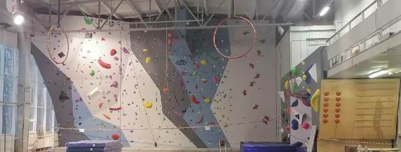
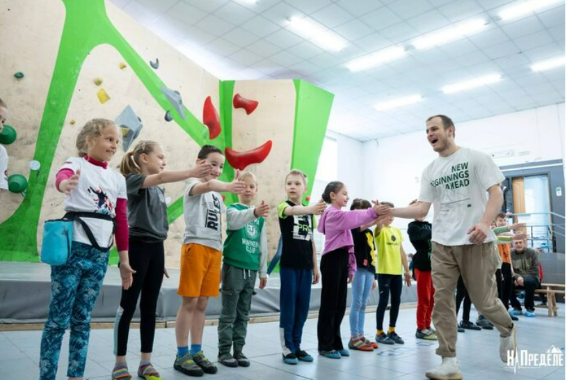
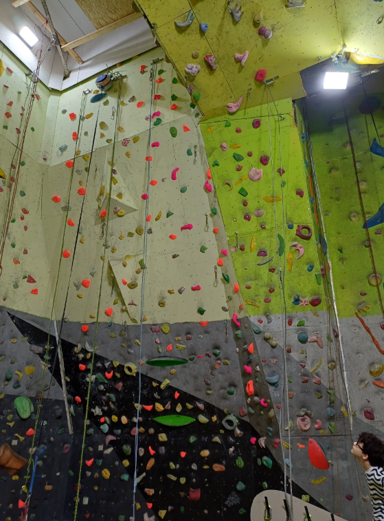

Популярные места
Скалодром Самарского университета "Луна"
Спортивный скалолазный объект, расположенный на базе Самарского национального исследовательского университета имени академика С.П. Королёва. Максимальная высота составляет 9 метров, общая площадь лазательной поверхности — 154 кв. метра, максимальный вынос — 4,8 метра (представлены все три вида дисциплин).
📍 Адрес: ул. Московское шоссе, 34 Перейти на сайт
Скалодром «На Пределе»
Скалодром «На Пределе» в Самаре имеет два филиала, предлагающих трассы для детей и взрослых, обучение скалолазанию и организацию праздников. Высота скалодрома доходит до 4,5 метров (боулдеринг).
📍 Адрес: ул. Молодогвардейская, 66 / ул. Воронежская, 7А Перейти на сайт
Скалодром "ParkRock"
Скалодром ParkRock — это самый крупный и высокий скалодром в Самаре. Площадь: около 1000 кв. м., высота стен: до 10 метров, трассы: подходят для любого уровня подготовки — от новичков до опытных скалолазов.
📍 Адрес: ул.Московское шоссе, 4 Перейти на сайт